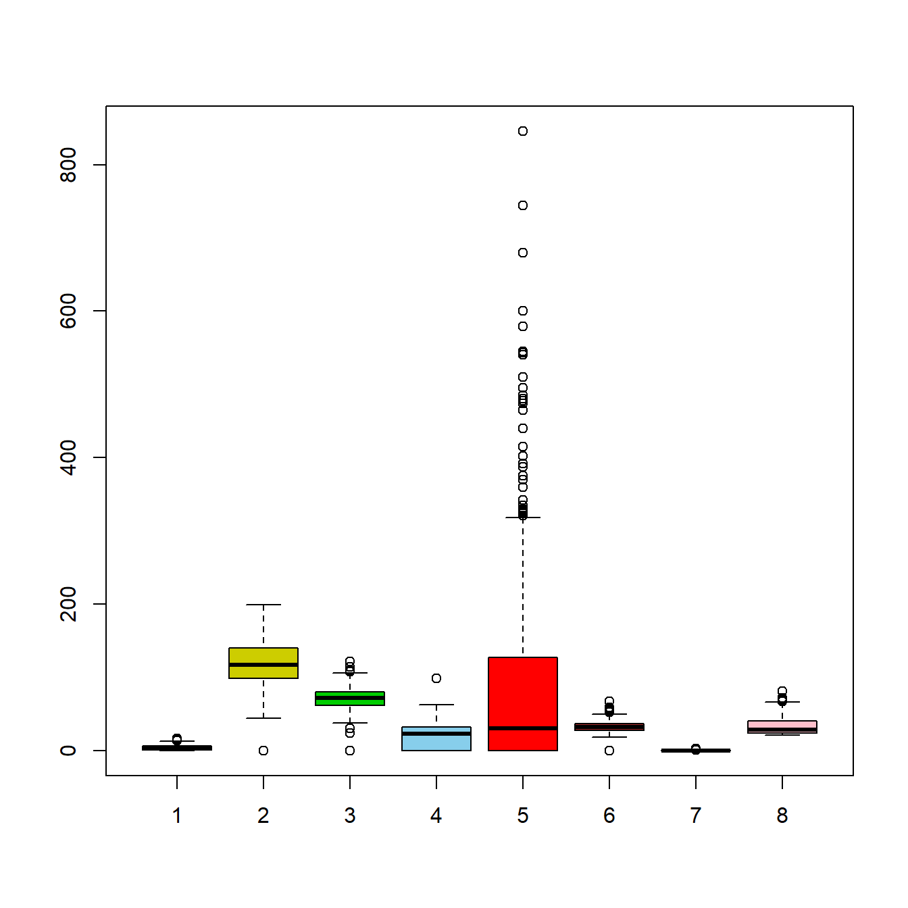
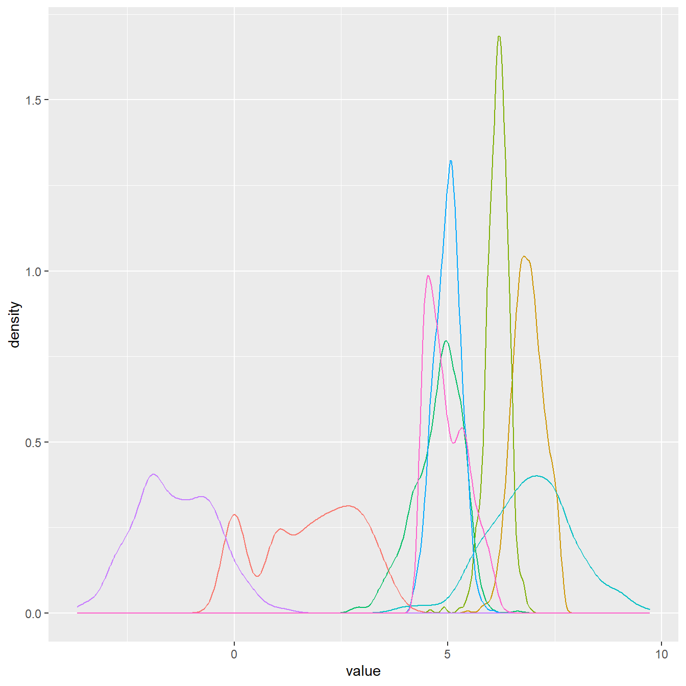

knitr::opts_chunk$set(comment = NA, prompt = TRUE, tidy.opts=list(width.cutoff=60),tidy=TRUE,
fig.width = 7, fig.height = 7,echo = TRUE,
message = FALSE, warning = FALSE, cache=T, out.extra = "")SVM (Support Vector Machine)
Flujo de trabajo para detectar diabetes
El siguiente código establece las opciones de configuración predeterminadas para los fragmentos de código en el entorno de RStudio utilizando el paquete knitr; afectan la forma en que se muestra y procesa el código en los fragmentos de RMarkdown cuando se generen informes o documentos a partir del código.
Paso 1. Recolectar datos y transformar
1.1. Cargamos librerías
A continuación se genera un bloque de revisión, instalación e implementación de las librerias necesarias para poder realizar el programa.
> libraries <- c("reshape2", "ggplot2", "kernlab", "caret")
> check.libraries <- is.element(libraries, installed.packages()[,
+ 1]) == FALSE
> libraries.to.install <- libraries[check.libraries]
>
> if (length(libraries.to.install != 0)) {
+ install.packages(libraries.to.install)
+ }
> success <- sapply(libraries, require, quietly = FALSE, character.only = TRUE)
>
> if (length(success) != length(libraries)) {
+ stop("Un paquete no ha devuelto un éxito en la función require().")
+ }1.2. Cargar datos
Posterior cargamos la base de datos referente a tumores de colon y realizamos un summary proporciona información descriptiva clave.
> datos <- read.csv("./diabetes.csv", header = T, sep = ",")
> head(datos) Pregnancies Glucose BloodPressure SkinThickness Insulin BMI
1 6 148 72 35 0 33.6
2 1 85 66 29 0 26.6
3 8 183 64 0 0 23.3
4 1 89 66 23 94 28.1
5 0 137 40 35 168 43.1
6 5 116 74 0 0 25.6
DiabetesPedigreeFunction Age Outcome
1 0.627 50 1
2 0.351 31 0
3 0.672 32 1
4 0.167 21 0
5 2.288 33 1
6 0.201 30 0> # Estadística descriptiva de la base de datos
> summary(datos) Pregnancies Glucose BloodPressure SkinThickness
Min. : 0.000 Min. : 0.0 Min. : 0.00 Min. : 0.00
1st Qu.: 1.000 1st Qu.: 99.0 1st Qu.: 62.00 1st Qu.: 0.00
Median : 3.000 Median :117.0 Median : 72.00 Median :23.00
Mean : 3.845 Mean :120.9 Mean : 69.11 Mean :20.54
3rd Qu.: 6.000 3rd Qu.:140.2 3rd Qu.: 80.00 3rd Qu.:32.00
Max. :17.000 Max. :199.0 Max. :122.00 Max. :99.00
Insulin BMI DiabetesPedigreeFunction Age
Min. : 0.0 Min. : 0.00 Min. :0.0780 Min. :21.00
1st Qu.: 0.0 1st Qu.:27.30 1st Qu.:0.2437 1st Qu.:24.00
Median : 30.5 Median :32.00 Median :0.3725 Median :29.00
Mean : 79.8 Mean :31.99 Mean :0.4719 Mean :33.24
3rd Qu.:127.2 3rd Qu.:36.60 3rd Qu.:0.6262 3rd Qu.:41.00
Max. :846.0 Max. :67.10 Max. :2.4200 Max. :81.00
Outcome
Min. :0.000
1st Qu.:0.000
Median :0.000
Mean :0.349
3rd Qu.:1.000
Max. :1.000 1.3. Diagrama de Cajas
A continuación se realiza el diagrama de cajas para visualizar la distribución y resumir las principales características de un conjunto de datos numéricos.
El diagrama de caja en R se realiza con la función “boxplot”, que toma como argumento uno o varios vectores numéricos. Al graficar un diagrama de caja, se muestra la mediana como una línea en el centro de la caja, los cuartiles superior e inferior como los bordes superior e inferior de la caja, y los valores atípicos como puntos fuera de los bigotes.
> # Diagrama de Caja general de los datos crudos
> boxplot(datos$Pregnancies, datos$Glucose, datos$BloodPressure,
+ datos$SkinThickness, datos$Insulin, datos$BMI, datos$DiabetesPedigreeFunction,
+ datos$Age, col = c("orange3", "yellow3", "green3", "skyblue",
+ "red", "brown", "blue", "pink"))
El siguente código transforma la última columna de la matriz de datos y la convierte en un factor. Posterior a ello, se crea un gráfico de densidad basado en los datos moldeados “X.melt”, se aplica una transformación logarítmica a los datos en “X” y combina la matriz de características “X” y el vector de clases “clases” en una nueva matriz “datos.log”.
> # Transformación de los datos
> clases <- as.factor(datos[, ncol(datos)])
> X <- datos[, -ncol(datos)]
> X.melt <- melt((log2(X)))
>
> # Genera un gráfico de densidad
> p <- ggplot(aes(x = value, colour = variable), data = X.melt)
> p + geom_density(show.legend = F)
> X.log <- log2(X)
> datos.log <- cbind(X, clases)
> class(datos.log)[1] "data.frame"Paso 2. Dividir los datos en entrenamiento y prueba
Generamos la división entre datos de entrenamiento y de prueba con la semilla de aleatorización establecida anteriormente en parámetros.
> n <- nrow(datos)
> set.seed(12345)
>
> train <- sample(n, floor(n * 0.6666667))
> datos.train <- datos.log[train, ] #Datos de entrenamiento
> datos.test <- datos.log[-train, ] #Datos de pruebaPaso 3. Entrenamiento del modelo
Se realiza el entrenamiento del modelo de Máquina de Vectores de Soporte (SVM) con el kernel especificado, usando la configuración de los parámetros por defecto del kernel.
> clasifier.lineal <- ksvm(clases ~ ., data = datos.train, kernel = "vanilladot") Setting default kernel parameters > clasifier.gauss <- ksvm(clases ~ ., data = datos.train, kernel = "rbfdot")Se utiliza para problemas de clasificación lineal, donde se busca encontrar un hiperplano que pueda separar las clases de manera lineal en el espacio de características.
> clasifier.linealSupport Vector Machine object of class "ksvm"
SV type: C-svc (classification)
parameter : cost C = 1
Linear (vanilla) kernel function.
Number of Support Vectors : 274
Objective Function Value : -270.0474
Training error : 0.246094 Este kernel es útil cuando los datos no son linealmente separables en el espacio de características y se busca una separación no lineal; asigna los puntos a un espacio de mayor dimensionalidad donde pueden ser separados linealmente.
> clasifier.gaussSupport Vector Machine object of class "ksvm"
SV type: C-svc (classification)
parameter : cost C = 1
Gaussian Radial Basis kernel function.
Hyperparameter : sigma = 0.15059526101912
Number of Support Vectors : 305
Objective Function Value : -231.6508
Training error : 0.166016 Paso 4. Evaluación del rendimiento del modelo
A continuación, utilizamos el clasificador lineal, se realiza la predicción en el conjunto de datos de prueba. Se crea una tabla de contingencia comparando las predicciones obtenidas con el clasificador lineal y las verdaderas clases del conjunto de datos de prueba.
Utilizamos el clasificador gaussiano, se realiza la predicción en el conjunto de datos de prueba. Se crea una tabla de contingencia comparando las predicciones obtenidas con el clasificador gaussiano y las verdaderas clases del conjunto de datos de prueba.
> prediction.linear <- predict(clasifier.lineal, datos.test)
>
>
> res.linear <- table(prediction.linear, datos.test$clases)
>
>
> prediction.gauss <- predict(clasifier.gauss, datos.test)
>
>
> res.gauss <- table(prediction.gauss, datos.test$clases)Calcula la matriz de confusión utilizando los resultados del clasificador lineal, considerando la clase “1” como la clase positiva.
> (cmatrix1 <- confusionMatrix(res.linear, positive = "1"))Confusion Matrix and Statistics
prediction.linear 0 1
0 147 34
1 24 51
Accuracy : 0.7734
95% CI : (0.7172, 0.8232)
No Information Rate : 0.668
P-Value [Acc > NIR] : 0.0001452
Kappa : 0.4737
Mcnemar's Test P-Value : 0.2373018
Sensitivity : 0.6000
Specificity : 0.8596
Pos Pred Value : 0.6800
Neg Pred Value : 0.8122
Prevalence : 0.3320
Detection Rate : 0.1992
Detection Prevalence : 0.2930
Balanced Accuracy : 0.7298
'Positive' Class : 1
Se calcula la matriz de confusión utilizando los resultados del clasificador gaussiano, considerando la clase “1” como la clase positiva.
> (cmatrix2 <- confusionMatrix(res.gauss, positive = "1"))Confusion Matrix and Statistics
prediction.gauss 0 1
0 150 44
1 21 41
Accuracy : 0.7461
95% CI : (0.6882, 0.7982)
No Information Rate : 0.668
P-Value [Acc > NIR] : 0.004168
Kappa : 0.3858
Mcnemar's Test P-Value : 0.006357
Sensitivity : 0.4824
Specificity : 0.8772
Pos Pred Value : 0.6613
Neg Pred Value : 0.7732
Prevalence : 0.3320
Detection Rate : 0.1602
Detection Prevalence : 0.2422
Balanced Accuracy : 0.6798
'Positive' Class : 1
Paso 5. Situaciones:
5.1. Validación cruzada quíntuple
El siguiente código entrena un modelo de SVM lineal en los datos de entrenamiento y luego muestra un resumen de este modelo entrenado, brindando información importante sobre su rendimiento y ajuste.
> model.5v.linear <- train(clases ~ ., datos.train, method = "svmLinear",
+ trControl = trainControl(method = "cv", number = 5), tuneGrid = NULL,
+ tuneLength = 10, trace = FALSE)
>
> summary(model.5v.linear)Length Class Mode
1 ksvm S4 El siguiente código realiza predicciones utilizando el modelo entrenado en los datos de prueba y compara estas predicciones con las clases reales. Luego, se genera una matriz de confusión para evaluar el rendimiento del modelo en términos de clasificaciones correctas e incorrectas.
Se calcula la matriz de confusión utilizando los resultados del clasificador gaussiano, considerando la clase “1” como la clase positiva.
> prediction <- predict(model.5v.linear, datos.test) # prediccion
> res.linear.2 <- table(prediction, datos.test$clases) # comparacion
>
>
> confusionMatrix(res.linear.2, positive = "1")Confusion Matrix and Statistics
prediction 0 1
0 147 34
1 24 51
Accuracy : 0.7734
95% CI : (0.7172, 0.8232)
No Information Rate : 0.668
P-Value [Acc > NIR] : 0.0001452
Kappa : 0.4737
Mcnemar's Test P-Value : 0.2373018
Sensitivity : 0.6000
Specificity : 0.8596
Pos Pred Value : 0.6800
Neg Pred Value : 0.8122
Prevalence : 0.3320
Detection Rate : 0.1992
Detection Prevalence : 0.2930
Balanced Accuracy : 0.7298
'Positive' Class : 1
Se entrena un modelo de SVM radial en los datos de entrenamiento y luego muestra un resumen de este modelo entrenado, brindando información relevante sobre su rendimiento.
> # modelo 5-crossvalidation
> model.5v.radial <- train(clases ~ ., datos.train, method = "svmRadial",
+ trControl = trainControl(method = "cv", number = 5), tuneGrid = NULL,
+ tuneLength = 10, trace = FALSE)
>
> summary(model.5v.radial)Length Class Mode
1 ksvm S4 El código realiza predicciones utilizando el modelo entrenado en los datos de prueba y compara estas predicciones con las clases reales. Luego, se genera una matriz de confusión para evaluar el rendimiento del modelo en términos de clasificaciones correctas e incorrectas.
Se calcula la matriz de confusión utilizando los resultados del clasificador gaussiano, considerando la clase “1” como la clase positiva.
> prediction <- predict(model.5v.radial, datos.test) # prediccion
> res.radial.2 <- table(prediction, datos.test$clases) # comparacion
>
> confusionMatrix(res.radial.2, positive = "1")Confusion Matrix and Statistics
prediction 0 1
0 149 45
1 22 40
Accuracy : 0.7383
95% CI : (0.6799, 0.791)
No Information Rate : 0.668
P-Value [Acc > NIR] : 0.009123
Kappa : 0.3669
Mcnemar's Test P-Value : 0.007194
Sensitivity : 0.4706
Specificity : 0.8713
Pos Pred Value : 0.6452
Neg Pred Value : 0.7680
Prevalence : 0.3320
Detection Rate : 0.1562
Detection Prevalence : 0.2422
Balanced Accuracy : 0.6710
'Positive' Class : 1
5.2. Bootstrap
El código proporcionado entrena un modelo de clasificación utilizando el algoritmo de SVM lineal en los datos de entrenamiento y luego muestra un resumen del modelo entrenado. El modelo se ajusta utilizando la fórmula “clases ~.”, lo que implica que la variable de clase “clases” está relacionada con todas las demás variables presentes en los datos de entrenamiento.
> model.bootstrap.linear <- train(clases ~ ., datos.train, method = "svmLinear",
+ trace = FALSE) # train
>
> summary(model.bootstrap.linear)Length Class Mode
1 ksvm S4 El código realiza predicciones utilizando el modelo entrenado en los datos de prueba y compara estas predicciones con las clases reales. Luego, se genera una matriz de confusión para evaluar el rendimiento del modelo en términos de clasificaciones correctas e incorrectas.
Se calcula la matriz de confusión utilizando los resultados del clasificador gaussiano, considerando la clase “1” como la clase positiva.
> prediction <- predict(model.bootstrap.linear, datos.test)
> res.gauss.2 <- table(prediction, datos.test$clases)
>
> confusionMatrix(res.gauss.2, positive = "1")Confusion Matrix and Statistics
prediction 0 1
0 147 34
1 24 51
Accuracy : 0.7734
95% CI : (0.7172, 0.8232)
No Information Rate : 0.668
P-Value [Acc > NIR] : 0.0001452
Kappa : 0.4737
Mcnemar's Test P-Value : 0.2373018
Sensitivity : 0.6000
Specificity : 0.8596
Pos Pred Value : 0.6800
Neg Pred Value : 0.8122
Prevalence : 0.3320
Detection Rate : 0.1992
Detection Prevalence : 0.2930
Balanced Accuracy : 0.7298
'Positive' Class : 1